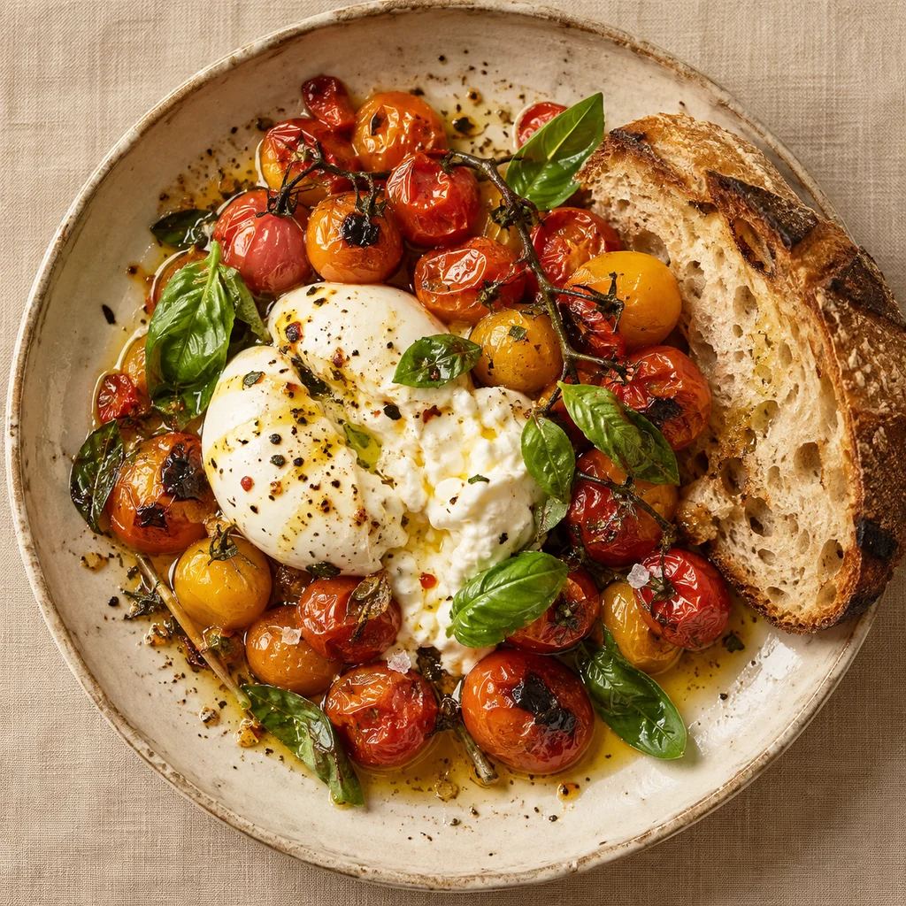

Para começar
Burrata, tomates na brasa, manjericão fresco e pão de fermentação natural.
Conceito por WunderHub Marca fictícia · demonstração visual
Da nossa cozinha para a sua mesa
Ingredientes da estação, fogo aceso e uma mesa pronta para reunir quem você gosta.
Explorar o cardápioCozinha de estação. Do primeiro encontro à última conversa.

Feito na casa.Este é um exemplo de direção visual. Seu projeto recebe conteúdo, identidade e funcionalidades próprios.
Cores, tipografia, fotos, textos e estrutura são definidos a partir da sua marca. A ideia é construir uma presença que represente o seu negócio.
Podemos conversar sobre catálogo, formulários, agendamento, integrações e conteúdo. O escopo e as ferramentas são definidos conforme a necessidade, antes do desenvolvimento.
Cardápio, história, localização e contato para reservas: uma experiência com o sabor da sua marca.